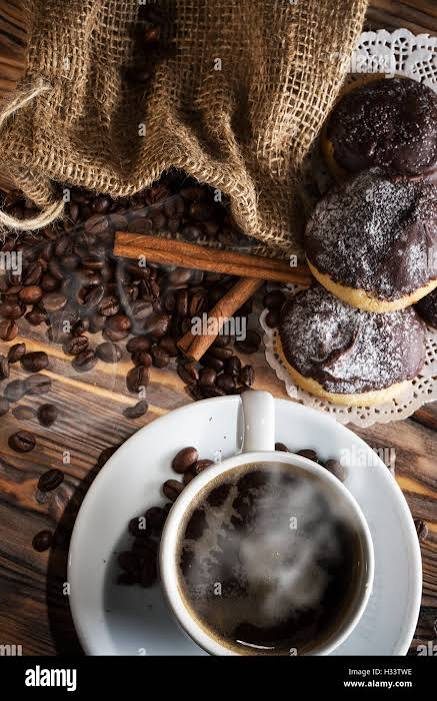
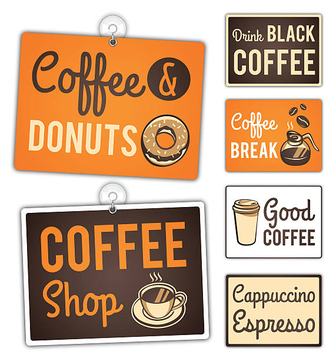

Fresh COFFEE plus DONUTS for Fresh People


Urban brew & donuts is a modernized coffee spot located in the heart of Johannesburg, South Africa. The goal of establishing the business was to create a modern and welcoming space for coffee and donut lovers in urban areas of Johannesburg. The business idea was inspired by the growing coffee culture, where coffee shops are not only places to buy coffee but also to socialize and host meetings, study and also relax if possible.